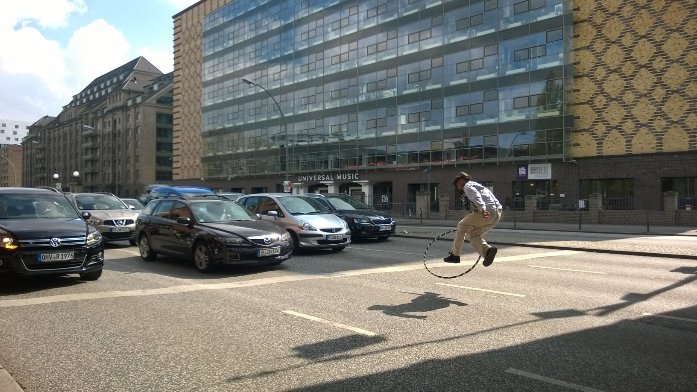
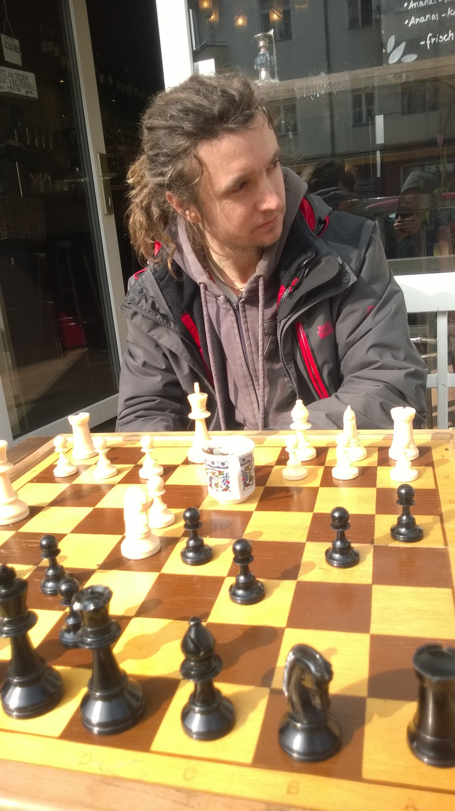
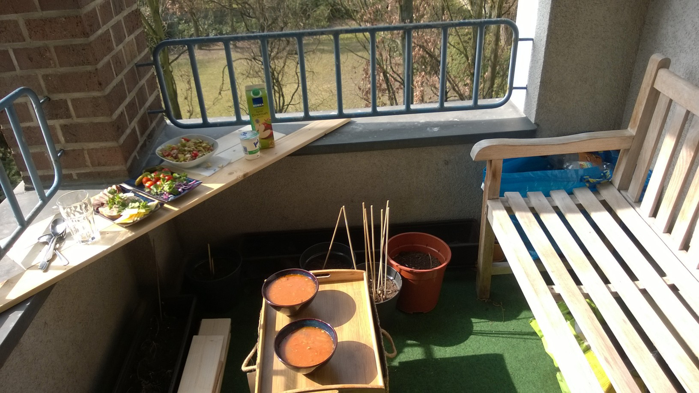
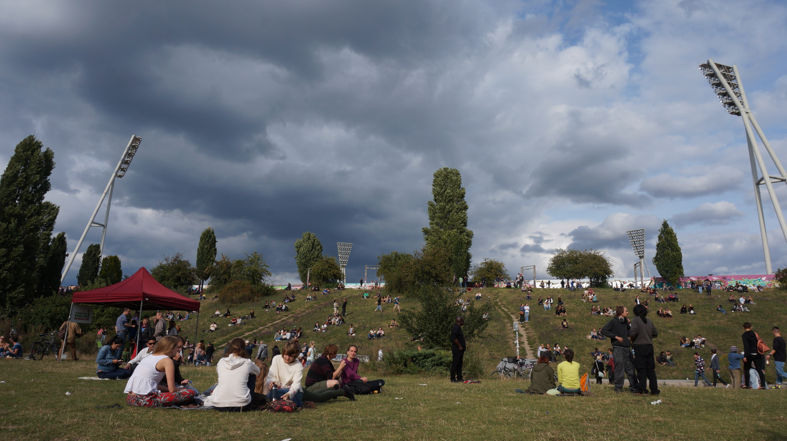
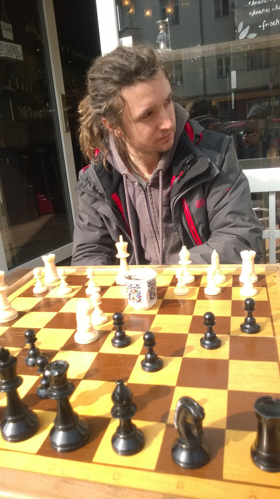
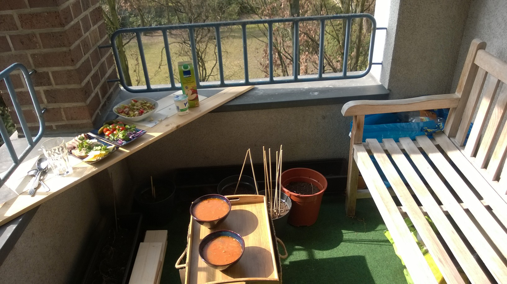
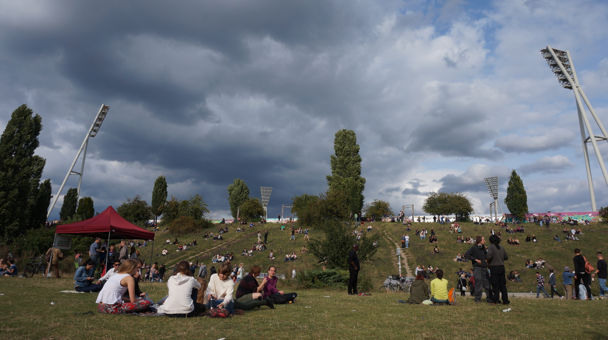
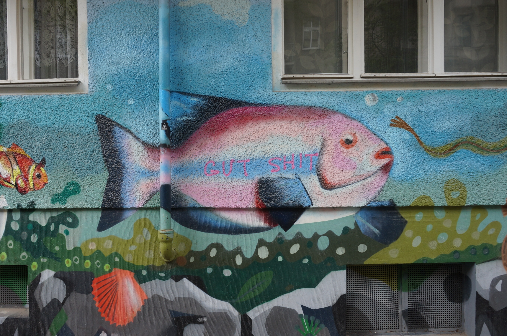
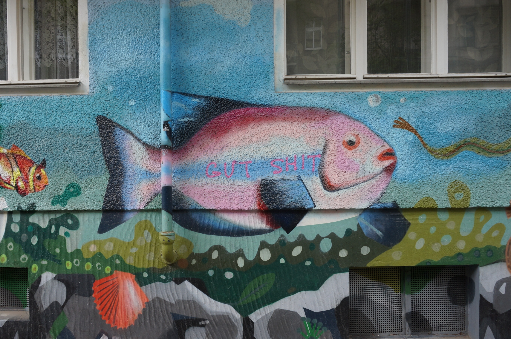

Previously seen in: Seattle
I am in BERLIN!
...and life there looks like this:
Traditional dance to appease the metal gods of the giant post-soviet street (APR'14)
 Tempelhofer: turn that
Tempelhofer: turn that frown upside down soviet airport into a community garden and windsurfing wonderland (AUG'14)
 From a 6am rave (with yoga and smoothies and loudness) that was more diverse and wheelchair-accessible than the last three conferences I've been to put together. (Not my photo! ~MAR'15)
Cafes, cafes everywhere. Also, Heinrich! He is very very serious at all times for ever just like me. We are always very serious together. We drink coffee and play chess after the 6am morning rave, you see, very serious indeed. (MAR'15)
Lunch at home on the balcony (MAR'15)
Some lawn near Mauerpark. Most of the time it is way too bright to take pictures of the sky, and most of the time I don't have my camera with me, so this is what y'all get. (AUG'14)
From a 6am rave (with yoga and smoothies and loudness) that was more diverse and wheelchair-accessible than the last three conferences I've been to put together. (Not my photo! ~MAR'15)
Cafes, cafes everywhere. Also, Heinrich! He is very very serious at all times for ever just like me. We are always very serious together. We drink coffee and play chess after the 6am morning rave, you see, very serious indeed. (MAR'15)
Lunch at home on the balcony (MAR'15)
Some lawn near Mauerpark. Most of the time it is way too bright to take pictures of the sky, and most of the time I don't have my camera with me, so this is what y'all get. (AUG'14)
 "No idea, but it looks cool!" - Story Of My Life (APR'14)
#GutShit (APR'14)
"No idea, but it looks cool!" - Story Of My Life (APR'14)
#GutShit (APR'14)
.